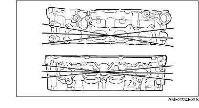

CYLINDER HEAD INSPECTION
A6E242410100E01
1. Carry out color contrast penetrate examination on the cylinder head surface.
-
• Replace the cylinder head if necessary.
2. Inspect for the following and repair or replace if necessary.
-
(1) Sunken valve seats
-
(2) Excessive camshaft oil clearance and end play
3. Measure the cylinder head for distortion in the six directions as shown.
-
• If the distortion exceeds the maximum, replace the cylinder head.
-
Maximum distortion:
-
0.10 mm {0.004 in}
4. Measure the manifold contact surface distortion as shown.
-
• If the distortion exceeds the maximum, grind the surface or replace the cylinder head.
-
Maximum distortion:
-
0.10 mm {0.004 in}
-
Maximum grinding:
-
0.15 mm {0.006 in}
